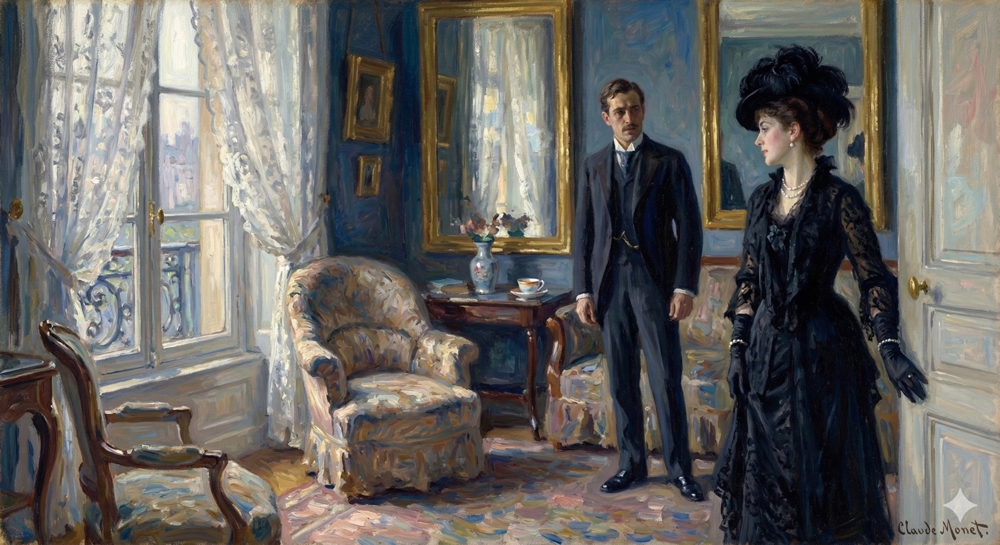

The provided text does not describe any actions or events. It consists only of the headings "SECTION 10 ORIGINAL" and "VOLUME II".
Based on the provided text, no characters are presented. The text is a structural heading ("SECTION 10 ORIGINAL VOLUME II") and is devoid of any human presence, action, or description.
Consequently, as no characters are introduced, there are no situations to establish or shifts to observe.
To see her alone, the poor girl, he none the less promptly felt, was to see her after all very much on the old basis, the basis of his three visits in New York; the new element, when once he was again face to face with her, not really amounting to much more than a recognition, with a little surprise, of the positive extent of the old basis. Everything but that, everything embarrassing fell away after he had been present five minutes: it was in fact wonderful that their excellent, their pleasant, their permitted and proper and harmless American relation—the legitimacy of which he could thus scarce express in names enough—should seem so unperturbed by other matters. They had both since then had great adventures—such an adventure for him was his mental annexation of her country; and it was now, for the moment, as if the greatest of them all were this acquired consciousness of reasons other than those that had already served. Densher had asked for her, at her hotel, the day after Aunt Maud's dinner, with a rich, that is with a highly troubled, preconception of the part likely to be played for him at present, in any contact with her, by Kate's and Mrs. Lowder's so oddly conjoined and so really superfluous attempts to make her interesting. She had been interesting enough without them—that appeared to-day to come back to him; and, admirable and beautiful as was the charitable zeal of the two ladies, it might easily have nipped in the bud the germs of a friendship inevitably limited but still perfectly open to him. What had happily averted the need of his breaking off, what would as happily continue to avert it, was his own good sense and good humour, a certain spring of mind in him which ministered, imagination aiding, to understandings and allowances and which he had positively never felt such ground as just now to rejoice in the possession of. Many men—he practically made the reflexion—wouldn't have taken the matter that way, would have lost patience, finding the appeal in question irrational, exorbitant; and, thereby making short work with it, would have let it render any further acquaintance with Miss Theale impossible. He had talked with Kate of this young woman's being "sacrificed," and that would have been one way, so far as he was concerned, to sacrifice her. Such, however, had not been the tune to which his at first bewildered view had, since the night before, cleared itself up. It wasn't so much that he failed of being the kind of man who "chucked," for he knew himself as the kind of man wise enough to mark the case in which chucking might be the minor evil and the least cruelty. It was that he liked too much every one concerned willingly to show himself merely impracticable. He liked Kate, goodness knew, and he also clearly enough liked Mrs. Lowder. He liked in particular Milly herself; and hadn't it come up for him the evening before that he quite liked even Susan Shepherd? He had never known himself so generally merciful. It was a footing, at all events, whatever accounted for it, on which he should surely be rather a muff not to manage by one turn or another to escape disobliging. Should he find he couldn't work it there would still be time enough. The idea of working it crystallised before him in such guise as not only to promise much interest—fairly, in case of success, much enthusiasm; but positively to impart to failure an appearance of barbarity.
Seeing her alone, the poor girl, he immediately felt was like seeing her in the same way he always had, just like their three visits in New York. The new things that had happened, when he was once again face-to-face with her, didn't really amount to much more than recognizing, with a little surprise, the solid foundation they already had. Everything awkward and uncomfortable vanished after he'd been there for five minutes. It was actually amazing that their great, pleasant, approved, proper, and harmless American friendship – a friendship that he could barely express how legitimate it was – seemed so unaffected by everything else. Both of them had had big adventures since then – like his mental adoption of her country. And now, at the moment, it was as if the greatest adventure was this new understanding of why he was drawn to her, different from the reasons he already knew. Densher had asked to see her at her hotel the day after Aunt Maud's dinner, with a strong, that is, a very troubled, expectation of what Kate and Mrs. Lowder's strangely joined and unnecessary attempts to make her interesting would do to him now that he was in contact with her. She had been interesting enough without them – that's what seemed to be true today. And, as admirable and well-intentioned as the two ladies were, they might easily have ruined the beginnings of a friendship that was always going to be limited, but was still open to him. What had thankfully prevented him from ending things, and what would continue to prevent it, was his own good sense and sense of humor, a certain mental resilience that helped him understand and be tolerant of things, and for which he had never felt so grateful. He realized that many men wouldn't have handled the situation this way, would have lost patience, finding the whole thing unreasonable and over-the-top. And, by doing that, they would have ended any further chance of knowing Miss Theale. He had discussed with Kate how this young woman was being "sacrificed," and that would have been one way, as far as he was concerned, to sacrifice her. But that's not how his initially confused feelings had cleared up since the night before. It wasn't that he wasn't the kind of person who would just "dump" her, because he knew he was the kind of person who was smart enough to recognize when dumping someone might be the lesser evil and the least cruel thing to do. It was that he liked everyone involved too much to be difficult. He liked Kate, goodness knows, and he clearly liked Mrs. Lowder too. He especially liked Milly herself; and hadn't he realized the night before that he even liked Susan Shepherd? He had never felt so universally forgiving. Whatever the reason, it was a situation where he would be a fool not to find a way to avoid causing offense. If he couldn't manage it, there would still be time enough. The idea of making it work took shape in his mind in a way that not only promised to be interesting – and potentially very exciting if he succeeded – but also made the possibility of failure seem barbaric.
Arriving thus in Brook Street both with the best intentions and with a margin consciously left for some primary awkwardness, he found his burden, to his great relief, unexpectedly light. The awkwardness involved in the responsibility so newly and so ingeniously traced for him turned round on the spot to present him another face. This was simply the face of his old impression, which he now fully recovered—the impression that American girls, when, rare case, they had the attraction of Milly, were clearly the easiest people in the world. Had what had happened been that this specimen of the class was from the first so committed to ease that nothing subsequent could ever make her difficult? That affected him now as still more probable than on the occasion of the hour or two lately passed with her in Kate's society. Milly Theale had recognised no complication, to Densher's view, while bringing him, with his companion, from the National Gallery and entertaining them at luncheon; it was therefore scarce supposable that complications had become so soon too much for her. His pretext for presenting himself was fortunately of the best and simplest; the least he could decently do, given their happy acquaintance, was to call with an enquiry after learning that she had been prevented by illness from meeting him at dinner. And then there was the beautiful accident of her other demonstration; he must at any rate have given a sign as a sequel to the hospitality he had shared with Kate. Well, he was giving one now—such as it was; he was finding her, to begin with, accessible, and very naturally and prettily glad to see him. He had come, after luncheon, early, though not so early but that she might already be out if she were well enough; and she was well enough and yet was still at home. He had an inner glimpse, with this, of the comment Kate would have made on it; it wasn't absent from his thought that Milly would have been at home by her account because expecting, after a talk with Mrs. Stringham, that a certain person might turn up. He even—so pleasantly did things go—enjoyed freedom of mind to welcome, on that supposition, a fresh sign of the beautiful hypocrisy of women. He went so far as to enjoy believing the girl might have stayed in for him; it helped him to enjoy her behaving as if she hadn't. She expressed, that is, exactly the right degree of surprise; she didn't a bit overdo it: the lesson of which was, perceptibly, that, so far as his late lights had opened the door to any want of the natural in their meetings, he might trust her to take care of it for him as well as for herself. She had begun this, admirably, on his entrance, with her turning away from the table at which she had apparently been engaged in letter-writing; it was the very possibility of his betraying a concern for her as one of the afflicted that she had within the first minute conjured away. She was never, never—did he understand?—to be one of the afflicted for him; and the manner in which he understood it, something of the answering pleasure that he couldn't help knowing he showed, constituted, he was very soon after to acknowledge, something like a start for intimacy. When things like that could pass people had in truth to be equally conscious of a relation. It soon made one, at all events, when it didn't find one made. She had let him ask—there had been time for that, his allusion to her friend's explanatory arrival at Lancaster Gate without her being inevitable; but she had blown away, and quite as much with the look in her eyes as with the smile on her lips, every ground for anxiety and every chance for insistence. How was she?—why she was as he thus saw her and as she had reasons of her own, nobody else's business, for desiring to appear. Kate's account of her as too proud for pity, as fiercely shy about so personal a secret, came back to him; so that he rejoiced he could take a hint, especially when he wanted to. The question the girl had quickly disposed of—"Oh it was nothing: I'm all right, thank you!"—was one he was glad enough to be able to banish. It wasn't at all, in spite of the appeal Kate had made to him on it, his affair; for his interest had been invoked in the name of compassion, and the name of compassion was exactly what he felt himself at the end of two minutes forbidden so much as to whisper. He had been sent to see her in order to be sorry for her, and how sorry he might be, quite privately, he was yet to make out. Didn't that signify, however, almost not at all?—inasmuch as, whatever his upshot, he was never to give her a glimpse of it. Thus the ground was unexpectedly cleared; though it was not till a slightly longer time had passed that he read clear, at first with amusement and then with a strange shade of respect, what had most operated. Extraordinarily, quite amazingly, he began to see that if his pity hadn't had to yield to still other things it would have had to yield quite definitely to her own. That was the way the case had turned round: he had made his visit to be sorry for her, but he would repeat it—if he did repeat it—in order that she might be sorry for him. His situation made him, she judged—when once one liked him—a subject for that degree of tenderness: he felt this judgement in her, and felt it as something he should really, in decency, in dignity, in common honesty, have very soon to reckon with.
Arriving at the address on Brook Street, he had the best of intentions and also anticipated some initial awkwardness. However, to his great relief, the situation felt surprisingly easy. The awkwardness he'd expected, based on the new and complicated responsibility he now carried, immediately changed its nature. It transformed into something else entirely. It was simply the feeling he'd had before—the feeling that American girls, especially those as attractive as Milly, were the most straightforward people in the world.
Was it possible that this particular woman had always been so comfortable with herself that nothing could ever make her difficult? He found this explanation even more plausible now than he had during the hour or two he'd spent with her in Kate's company. Milly Theale hadn't shown any signs of complications, as far as Densher could tell, when she'd taken him and Kate to the National Gallery and then out to lunch. So it was unlikely that complications had suddenly become overwhelming for her.
His reason for visiting was, fortunately, perfectly straightforward: the least he could do, given their pleasant acquaintance, was check on her after learning that she'd been too sick to meet him at dinner. And then there was the convenient fact that she'd indicated a desire for further contact. He had to follow up on the shared hospitality he'd enjoyed with Kate.
Well, he was doing just that—as best he could. He found her approachable and genuinely happy to see him. He'd arrived early in the afternoon, although not so early that she might not already be out if she were feeling better. But she was well enough and still at home. He imagined what Kate would make of this: he even suspected Milly might be at home because, after talking to Mrs. Stringham, she'd expected him. He was even, enjoying himself as he was, open to the possibility that this was a classic example of female deception. He went so far as to enjoy believing the girl might have stayed in for him. It amused him that she was acting as if she hadn't.
She expressed the perfect amount of surprise; she didn't overdo it at all. The clear message was that if he'd made their previous encounters feel forced or unnatural, he could trust her to handle it as well as herself. She'd begun this perfectly as he entered the room, turning away from her letter-writing. She immediately eliminated the possibility of his showing concern for her. She wasn't, under any circumstances, to be pitied by him. The way he understood this, the pleasure he couldn't help showing in response, was, he realized soon after, the start of an intimate connection.
When things like that could happen, people needed to be aware of the relationship. It quickly solidified when it wasn't already established. She'd let him ask about her friend's arrival without her at Lancaster Gate; but she eliminated all concern and the need to press for further information, as much with the look in her eyes as with her smile. "How are you?" "Oh, I'm fine, thank you!"—a question he was happy to dismiss. It wasn't his concern, despite Kate's plea for him to show her compassion, as compassion was forbidden. He was sent to see her to express his sympathy, and how sorry he might be, he was yet to determine. But did it matter at all? He was never to reveal his feelings.
Thus, the situation had unexpectedly clarified. After a while, he began to see, first with amusement and then with a strange respect, what was really happening. Surprisingly, amazingly, he began to understand that if his pity hadn't had to yield to other things, it would've had to yield to her. She had turned the situation around: he'd come to feel sorry for her, but if he saw her again, it would be so she could feel sorry for him.
His situation, she judged—once you liked him—was a subject for tenderness. He felt this judgment coming from her and realized he'd have to deal with it soon, out of decency, dignity, and common honesty.
Odd enough was it certainly that the question originally before him, the question placed there by Kate, should so of a sudden find itself quite dislodged by another. This other, it was easy to see, came straight up with the fact of her beautiful delusion and her wasted charity; the whole thing preparing for him as pretty a case of conscience as he could have desired, and one at the prospect of which he was already wincing. If he was interesting it was because he was unhappy; and if he was unhappy it was because his passion for Kate had spent itself in vain; and if Kate was indifferent, inexorable, it was because she had left Milly in no doubt of it. That above all was what came up for him—how clear an impression of this attitude, how definite an account of his own failure, Kate must have given her friend. His immediate quarter of an hour there with the girl lighted up for him almost luridly such an inference; it was almost as if the other party to their remarkable understanding had been with them as they talked, had been hovering about, had dropped in to look after her work. The value of the work affected him as different from the moment he saw it so expressed in poor Milly. Since it was false that he wasn't loved, so his right was quite quenched to figure on that ground as important; and if he didn't look out he should find himself appreciating in a way quite at odds with straightness the good faith of Milly's benevolence. There was the place for scruples; there the need absolutely to mind what he was about. If it wasn't proper for him to enjoy consideration on a perfectly false footing, where was the guarantee that, if he kept on, he mightn't soon himself pretend to the grievance in order not to miss the sweet? Consideration—from a charming girl—was soothing on whatever theory; and it didn't take him far to remember that he had himself as yet done nothing deceptive. It was Kate's description of him, his defeated state, it was none of his own; his responsibility would begin, as he might say, only with acting it out. The sharp point was, however, in the difference between acting and not acting: this difference in fact it was that made the case of conscience. He saw it with a certain alarm rise before him that everything was acting that was not speaking the particular word. "If you like me because you think she doesn't, it isn't a bit true: she does like me awfully!"—that would have been the particular word; which there were at the same time but too palpably such difficulties about his uttering. Wouldn't it be virtually as indelicate to challenge her as to leave her deluded?—and this quite apart from the exposure, so to speak, of Kate, as to whom it would constitute a kind of betrayal. Kate's design was something so extraordinarily special to Kate that he felt himself shrink from the complications involved in judging it. Not to give away the woman one loved, but to back her up in her mistakes—once they had gone a certain length—that was perhaps chief among the inevitabilities of the abjection of love. Loyalty was of course supremely prescribed in presence of any design on her part, however roundabout, to do one nothing but good.
It was certainly strange that the original question he had, the one Kate had brought up, was suddenly replaced by another. This new question, it was easy to see, stemmed from the fact of her beautiful delusion and her wasted generosity. The whole situation was shaping up to be as complex a moral dilemma as he could have wanted, and he was already starting to feel uncomfortable about it. If he was interesting, it was because he was unhappy. If he was unhappy, it was because his passion for Kate had been in vain. And if Kate was indifferent and unyielding, it was because she had made it perfectly clear to Milly how she felt. That, above all, was what he focused on—how clearly Kate must have conveyed her attitude, how definitive an account of his own failures she must have given her friend. His recent conversation with Milly revealed this almost vividly. It was almost as if the other person in their strange understanding had been present with them, hovering nearby, perhaps to oversee her own efforts. The value of her efforts struck him differently since he saw it so expressed in poor Milly. Since it wasn't true that he wasn't loved, he no longer had the right to consider himself important based on that. And if he wasn't careful, he might find himself appreciating Milly's generosity in a way that was completely dishonest. That was where the moral problems lay, and that was where he absolutely needed to be careful. If it wasn't right for him to enjoy the attention he was getting under false pretenses, what guarantee did he have that he wouldn't start pretending to be wronged just to avoid missing out on the pleasure? Attention—from a charming girl—was soothing no matter the reason. And it didn't take him long to remember that he hadn't actually done anything deceitful himself yet. It was Kate's description of him, his defeated state; it wasn't his own. His responsibility would begin, he might say, only with acting the part. However, the crucial point was the difference between acting and not acting; in fact, that was what created the moral conflict. He saw with a certain anxiety that everything was acting that wasn't saying the specific truth. "If you like me because you think she doesn't, that isn't true at all: she really does like me!"—that would have been the specific truth. Yet, there were obviously great difficulties with him actually saying that. Wouldn't it be almost as insensitive to challenge her as to let her be deceived? And that was entirely separate from the implication of Kate’s deception, which he felt would constitute a form of betrayal. Kate’s plan was so extraordinarily unique to Kate that he felt reluctant to consider all the complications involved in judging it. Not to expose the woman you love, but to support her in her mistakes—once they've gone a certain distance—that was perhaps the most important necessity when you are completely devoted to someone. Loyalty was, of course, absolutely required when it came to her schemes, however roundabout, to do him nothing but good.
Densher had quite to steady himself not to be awestruck at the immensity of the good his own friend must on all this evidence have wanted to do him. Of one thing indeed meanwhile he was sure: Milly Theale wouldn't herself precipitate his necessity of intervention. She would absolutely never say to him: "Is it so impossible she shall ever care for you seriously?"—without which nothing could well be less delicate than for him aggressively to set her right. Kate would be free to do that if Kate, in some prudence, some contrition, for some better reason in fine, should revise her plan; but he asked himself what, failing this, he could do that wouldn't be after all more gross than doing nothing. This brought him round again to the acceptance of the fact that the poor girl liked him. She put it, for reasons of her own, on a simple, a beautiful ground, a ground that already supplied her with the pretext she required. The ground was there, that is, in the impression she had received, retained, cherished; the pretext, over and above it, was the pretext for acting on it. That she now believed as she did made her sure at last that she might act; so that what Densher therefore would have struck at would be the root, in her soul, of a pure pleasure. It positively lifted its head and flowered, this pure pleasure, while the young man now sat with her, and there were things she seemed to say that took the words out of his mouth. These were not all the things she did say; they were rather what such things meant in the light of what he knew. Her warning him for instance off the question of how she was, the quick brave little art with which she did that, represented to his fancy a truth she didn't utter. "I'm well for you—that's all you have to do with or need trouble about: I shall never be anything so horrid as ill for you. So there you are; worry about me, spare me, please, as little as you can. Don't be afraid, in short, to ignore my 'interesting' side. It isn't, you see, even now while you sit here, that there aren't lots of others. Only do them justice and we shall get on beautifully." This was what was folded finely up in her talk—all quite ostensibly about her impressions and her intentions. She tried to put Densher again on his American doings, but he wouldn't have that to-day. As he thought of the way in which, the other afternoon, before Kate, he had sat complacently "jawing," he accused himself of excess, of having overdone it, having made—at least apparently—more of a "set" at their entertainer than he was at all events then intending. He turned the tables, drawing her out about London, about her vision of life there, and only too glad to treat her as a person with whom he could easily have other topics than her aches and pains. He spoke to her above all of the evidence offered him at Lancaster Gate that she had come but to conquer; and when she had met this with full and gay assent—"How could I help being the feature of the season, the what-do-you-call-it, the theme of every tongue?"—they fraternised freely over all that had come and gone for each since their interrupted encounter in New York.
Densher had to catch himself to avoid being completely overwhelmed by the good his friend must, based on everything he'd seen, have wanted to do for him. He was sure of one thing: Milly Theale wouldn't force him to intervene. She'd never say to him, "Is it so impossible that I could ever truly care for you?" Without that, it would be extremely insensitive for him to aggressively correct her. Kate could do that if Kate, using good judgment, expressing regret, or for some better reason, changed her plan. But he wondered what he could do, failing that, that wouldn’t be worse than doing nothing. This brought him back to accepting the fact that the poor girl liked him. She put it, for her own reasons, on a simple, beautiful basis, a basis that already gave her the excuse she needed. That basis was the impression she'd formed, that she'd kept and cherished. The excuse, beyond that, was the excuse to act on it. Because she believed as she did now, she was finally sure she could act. So, what Densher would be attacking was the core, in her soul, of a pure pleasure. This pure pleasure definitely blossomed while the young man sat with her, and there were things she seemed to say that took the words right out of his mouth. These weren't all the things she actually said; they were rather what those things meant in light of what he knew. For instance, her warning him away from the question of her health, the quick, brave way she did it, represented to him a truth she didn't state. "I'm fine for you—that's all you need to worry about. I will never be something awful like ill for you. So there you go; please worry about me as little as possible. In short, don’t be afraid to ignore my 'interesting' side. There are, even now while you sit here, lots of other interesting things. Just focus on those, and we'll get along beautifully." This was what was subtly embedded in her conversation, all seemingly about her impressions and intentions. She tried to get Densher talking about his American business, but he wasn’t going for that today. Thinking about how he'd sat, the other afternoon, before Kate, happily "talking," he accused himself of going too far, of overdoing it, of at least seeming to make more of an effort to charm their hostess than he'd originally intended. He turned the tables, drawing her out about London, about her vision of life there, and was only too happy to treat her as someone he could talk to about things other than her ailments. He spoke to her, above all, about the evidence he'd seen at Lancaster Gate that she had come only to conquer. When she agreed fully and gaily - "How could I help being the highlight of the season, the center of attention?" - they bonded over everything that had happened for each of them since their interrupted meeting in New York.
At the same time, while many things in quick succession came up for them, came up in particular for Densher, nothing perhaps was just so sharp as the odd influence of their present conditions on their view of their past ones. It was as if they hadn't known how "thick" they had originally become, as if, in a manner, they had really fallen to remembrance of more passages of intimacy than there had in fact at the time quite been room for. They were in a relation now so complicated, whether by what they said or by what they didn't say, that it might have been seeking to justify its speedy growth by reaching back to one of those fabulous periods in which prosperous states place their beginnings. He recalled what had been said at Mrs. Lowder's about the steps and stages, in people's careers, that absence caused one to miss, and about the resulting frequent sense of meeting them further on; which, with some other matters also recalled, he took occasion to communicate to Milly. The matters he couldn't mention mingled themselves with those he did; so that it would doubtless have been hard to say which of the two groups now played most of a part. He was kept face to face with this young lady by a force absolutely resident in their situation and operating, for his nerves, with the swiftness of the forces commonly regarded by sensitive persons as beyond their control. The current thus determined had positively become for him, by the time he had been ten minutes in the room, something that, but for the absurdity of comparing the very small with the very great, he would freely have likened to the rapids of Niagara. An uncriticised acquaintance between a clever young man and a responsive young woman could do nothing more, at the most, than go, and his actual experiment went and went and went. Nothing probably so conduced to make it go as the marked circumstance that they had spoken all the while not a word about Kate; and this in spite of the fact that, if it were a question for them of what had occurred in the past weeks, nothing had occurred comparable to Kate's predominance. Densher had but the night before appealed to her for instruction as to what he must do about her, but he fairly winced to find how little this came to. She had foretold him of course how little; but it was a truth that looked different when shown him by Milly. It proved to him that the latter had in fact been dealt with, but it produced in him the thought that Kate might perhaps again conveniently be questioned. He would have liked to speak to her before going further—to make sure she really meant him to succeed quite so much. With all the difference that, as we say, came up for him, it came up afresh, naturally, that he might make his visit brief and never renew it; yet the strangest thing of all was that the argument against that issue would have sprung precisely from the beautiful little eloquence involved in Milly's avoidances.
Meanwhile, as they experienced many things rapidly, especially for Densher, nothing stood out quite as much as the strange effect their current circumstances had on how they remembered the past. It was as if they hadn’t realized how deeply intertwined they'd become. They seemed to recall more intimate moments than there actually had been. Their relationship was now so complex, both in what they said and didn’t say, that it was almost trying to justify its rapid development by creating a mythical origin story. He remembered Mrs. Lowder's comments about how much you miss in other people’s lives when you're not around them, and how you often encounter them later in different circumstances. He shared this and other memories with Milly.
The thoughts he couldn't express blended with those he did. It would be difficult to say which group of thoughts had more influence. His situation with this young woman compelled him to face her, and the intensity of it was overwhelming, like a force beyond his control. Ten minutes into being in her presence, he felt the current between them as strong as the Niagara rapids, though it felt silly to make such a comparison. A simple, unexamined friendship between two intelligent, responsive young people could, at most, progress at a certain rate. But their connection kept growing and growing.
What probably fueled this progress most was that they hadn't mentioned Kate once, even though Kate had been the most significant person in their lives during the past few weeks. Densher had sought Kate's guidance the previous night about how he should handle the situation, but now, he was surprised by how little that advice mattered. Kate had warned him it would be this way, but Milly’s perspective made it clear. This showed him Milly had taken control, but it made him think about questioning Kate again. He wanted to talk to her before going further—to confirm she truly wanted him to succeed so completely. Although he could choose to end his visits and never return, the most surprising thing was that the case *against* that option came from the beautiful, unspoken communication within Milly's silences.
Precipitate these well might be, since they emphasised the fact that she was proceeding in the sense of the assurances she had taken. Over the latter she had visibly not hesitated, for hadn't they had the merit of giving her a chance? Densher quite saw her, felt her take it; the chance, neither more nor less, of help rendered him according to her freedom. It was what Kate had left her with: "Listen to him, I? Never! So do as you like." What Milly "liked" was to do, it thus appeared, as she was doing: our young man's glimpse of which was just what would have been for him not less a glimpse of the peculiar brutality of shaking her off. The choice exhaled its shy fragrance of heroism, for it was not aided by any question of parting with Kate. She would be charming to Kate as well as to Kate's adorer; she would incur whatever pain could dwell for her in the sight—should she continue to be exposed to the sight—of the adorer thrown with the adored. It wouldn't really have taken much more to make him wonder if he hadn't before him one of those rare cases of exaltation—food for fiction, food for poetry—in which a man's fortune with the woman who doesn't care for him is positively promoted by the woman who does. It was as if Milly had said to herself: "Well, he can at least meet her in my society, if that's anything to him; so that my line can only be to make my society attractive." She certainly couldn't have made a different impression if she had so reasoned. All of which, none the less, didn't prevent his soon enough saying to her, quite as if she were to be whirled into space: "And now, then, what becomes of you? Do you begin to rush about on visits to country-houses?"
These things were likely to happen, since they highlighted the fact that she was acting in accordance with the promises she'd been given. She hadn’t hesitated to follow those promises, because they'd given her an opportunity. Densher understood this completely, he felt her seize the opportunity, to help him in her own way. That’s what Kate had told her: “Listen to him? Never! Do whatever you want.” What Milly “wanted” was to do what she was doing. This realization would have felt to him like the brutal necessity of dismissing her completely. Her choice had the quiet feeling of self-sacrifice, because it didn’t involve separating from Kate. She would be as charming to Kate as she was to Kate’s admirer. She would endure the potential pain of seeing them together, if she continued to be exposed to the sight of them. It wouldn't have taken much more for him to wonder if he wasn't witnessing a rare, inspiring situation—perfect for a novel or poem—where a man's relationship with a woman who doesn't love him is actually helped by the woman who does. It was as if Milly had thought, "Well, at least he can see her in my company, if that means anything to him. So, I should just make my company enjoyable." She couldn’t have made a different impression if she had thought this way. Nevertheless, this didn’t stop him from saying to her soon after, as if she were about to disappear: "So, what happens to you now? Are you starting to travel around visiting country houses?"
She disowned the idea with a headshake that, put on what face she would, couldn't help betraying to him something of her suppressed view of the possibility—ever, ever perhaps—of any such proceedings. They weren't at any rate for her now. "Dear no. We go abroad for a few weeks somewhere of high air. That has been before us for many days; we've only been kept on by last necessities here. However, everything's done and the wind's in our sails."
She dismissed the idea with a shake of her head. No matter how she tried to hide it, her expression gave away her hidden belief that such a thing – ever, even possibly – could happen.
It certainly wasn't going to happen for her, at least not now. "Absolutely not. We're going abroad for a few weeks to somewhere with good, clean air. That's been our plan for a while; we've only been delayed by last-minute obligations. But everything is finished, and we're ready to go."
"May you scud then happily before it! But when," he asked, "do you come back?"
Go ahead and enjoy yourself! But," he asked, "when will you be back?"
She looked ever so vague; then as if to correct it: "Oh when the wind turns. And what do you do with your summer?"
She seemed a bit out of it, and then, as if to fix that: "Oh, when the wind changes direction. And what do you do during the summer?"
"Ah I spend it in sordid toil. I drench it with mercenary ink. My work in your country counts for play as well. You see what's thought of the pleasure your country can give. My holiday's over."
I'm stuck in a miserable job. I'm just churning out work for money. Even the work I do here feels like fun to you. It shows what people think of the good times your country offers. My vacation is over.
"I'm sorry you had to take it," said Milly, "at such a different time from ours. If you could but have worked while we've been working—"
"I'm sorry you had to experience it," Milly said, "at a time so unlike our own. If only you could have been working at the same time we have been..."
"I might be playing while you play? Oh the distinction isn't so great with me. There's a little of each for me, of work and of play, in either. But you and Mrs. Stringham, with Miss Croy and Mrs. Lowder—you all," he went on, "have been given up, like navvies or niggers, to real physical toil. Your rest is something you've earned and you need. My labour's comparatively light."
Could I be enjoying myself while you are? Well, it's not a huge difference for me. I get a bit of both, work and play, in everything I do. But you, and Mrs. Stringham, with Miss Croy and Mrs. Lowder - you've all been working incredibly hard, like laborers or people of color. Your rest is something you've earned and you need. My work is relatively easy.
"Very true," she smiled; "but all the same I like mine."
"That's true," she smiled, "but I still like mine better."
"It doesn't leave you 'done'?"
You're not exhausted?
"Not a bit. I don't get tired when I'm interested. Oh I could go far."
Not at all. I don't get tired when I'm engaged.
Oh, I could keep going for a long time.
He bethought himself. "Then why don't you?—since you've got here, as I learn, the whole place in your pocket."
He thought about it. "So why don't you do it?—since you've got, as I understand it, the power to control everything here."
"Well, it's a kind of economy—I'm saving things up. I've enjoyed so what you speak of—though your account of it's fantastic—that I'm watching over its future, that I can't help being anxious and careful. I want—in the interest itself of what I've had and may still have—not to make stupid mistakes. The way not to make them is to get off again to a distance and see the situation from there. I shall keep it fresh," she wound up as if herself rather pleased with the ingenuity of her statement—"I shall keep it fresh, by that prudence, for my return."
Okay, so it's a kind of savings plan—I'm holding onto things. I've really liked what you're talking about—even though your version is exaggerated—so I'm trying to protect its future. I can't help but feel worried and cautious. I don't want to mess things up—for the sake of what I've experienced and might still experience. The best way to avoid mistakes is to step back and look at things from a distance. I'll keep it vibrant," she concluded, seemingly satisfied with how cleverly she'd phrased it, "I'll keep it vibrant, using that caution, so I can enjoy it again when I come back."
"Ah then you will return? Can you promise one that?"
So, are you coming back? Can you promise me that?
Her face fairly lighted at his asking for a promise; but she made as if bargaining a little. "Isn't London rather awful in winter?"
Her face lit up when he asked for a promise, but she pretended to hesitate. "Isn't London dreadful in the winter?"
He had been going to ask her if she meant for the invalid; but he checked the infelicity of this and took the enquiry as referring to social life. "No—I like it, with one thing and another; it's less of a mob than later on; and it would have for us the merit—should you come here then—that we should probably see more of you. So do reappear for us—if it isn't a question of climate."
He was about to ask if she was talking about the sick person, but he stopped himself because that was awkward. He decided she meant social events. "No, I enjoy it, all things considered. There are fewer people than later in the evening, and if you were to come then, it would be a bonus for us—we'd get to see you more often. So, please come back—unless the weather's the problem."
She looked at that a little graver. "If what isn't a question—?"
She looked at that a bit more seriously. "If... what's not a question?"
"Why the determination of your movements. You spoke just now of going somewhere for that."
Why are you planning to go somewhere? You just mentioned it.
"For better air?"—she remembered. "Oh yes, one certainly wants to get out of London in August."
"For cleaner air?" she recalled. "Oh yeah,
you definitely want to leave London in August."
"Rather, of course!"—he fully understood. "Though I'm glad you've hung on long enough for me to catch you. Try us at any rate," he continued, "once more."
"Of course!" – he completely understood.
"But I'm happy you've stuck around long enough for me to find you. Try it again, at least," he continued.
"Whom do you mean by 'us'?" she presently asked.
"Who are you talking about when you say 'us'?" she asked then.
It pulled him up an instant—representing, as he saw it might have seemed, an allusion to himself as conjoined with Kate, whom he was proposing not to mention any more than his hostess did. But the issue was easy. "I mean all of us together, every one you'll find ready to surround you with sympathy."
It stopped him for a moment. He realized it might seem like he was being compared to Kate, since he wasn't planning on mentioning her, just like his hostess. But it was simple. "I mean all of us, everyone here who will support you."
It made her, none the less, in her odd charming way, challenge him afresh. "Why do you say sympathy?"
Despite that, her quirky and charming personality made her challenge him again. "Why do you call it sympathy?"
"Well, it's doubtless a pale word. What we shall feel for you will be much nearer worship."
Okay, it's probably an understatement. How we'll feel about you will be closer to adoration.
"As near then as you like!" With which at last Kate's name was sounded. "The people I'd most come back for are the people you know. I'd do it for Mrs. Lowder, who has been beautifully kind to me."
"Whenever you're ready!" And finally, Kate's name was called. "The people I'd really want to see again are the ones you know. I'd do it for Mrs. Lowder, she's been incredibly nice to me."
"So she has to me," said Densher. "I feel," he added as she at first answered nothing, "that, quite contrary to anything I originally expected, I've made a good friend of her."
"Well, she told me," said Densher. "I feel," he continued, because she didn't say anything at first, "that, completely opposite to what I thought would happen, I've become good friends with her."
"I didn't expect it either—its turning out as it has. But I did," said Milly, "with Kate. I shall come back for her too. I'd do anything"—she kept it up—"for Kate."
I didn't think things would go this way, either. But I did, with Kate," Milly said. "I'll come back for her, too. I'd do anything"—she insisted—"for Kate."
Looking at him as with conscious clearness while she spoke, she might for the moment have effectively laid a trap for whatever remains of the ideal straightness in him were still able to pull themselves together and operate. He was afterwards to say to himself that something had at that moment hung for him by a hair. "Oh I know what one would do for Kate!"—it had hung for him by a hair to break out with that, which he felt he had really been kept from by an element in his consciousness stronger still. The proof of the truth in question was precisely in his silence; resisting the impulse to break out was what he was doing for Kate. This at the time moreover came and went quickly enough; he was trying the next minute but to make Milly's allusion easy for herself. "Of course I know what friends you are—and of course I understand," he permitted himself to add, "any amount of devotion to a person so charming. That's the good turn then she'll do us all—I mean her working for your return."
As she spoke, looking directly at him with a clear, knowing gaze, she seemed to be setting a trap, momentarily, for whatever remaining integrity he possessed, the last vestiges of his honesty that might still be functioning. He would later reflect that he'd narrowly avoided something at that moment. "Oh, I know what one would do for Kate!" He'd almost blurted that out, but something in his mind, something even stronger, had stopped him. The evidence of the truth was in his silence; he was *resisting* the urge to confess, doing this for Kate. This feeling came and went quickly. The very next minute, he tried to smooth things over for Milly. "Of course, I know how close you two are – and of course, I understand," he allowed himself to say, "any amount of affection for someone so charming. That's the favor she'll do for us all – I mean, her working to get you back."
"Oh you don't know," said Milly, "how much I'm really on her hands."
"Oh, you have no idea," said Milly, "how much she depends on me."
He could but accept the appearance of wondering how much he might show he knew. "Ah she's very masterful."
He could only pretend to be curious, wondering how much he should let on that he knew. "Oh, she's very bossy," he said.
"She's great. Yet I don't say she bullies me."
She's awesome, but I wouldn't say she's a bully.
"No—that's not the way. At any rate it isn't hers," he smiled. He remembered, however, then that an undue acquaintance with Kate's ways was just what he mustn't show; and he pursued the subject no further than to remark with a good intention that had the further merit of representing a truth: "I don't feel as if I knew her—really to call know."
"No, that's not it. Either way, it's not her style," he smiled. But then he remembered that he shouldn't seem overly familiar with Kate's habits. So he dropped the subject and, with good intentions, added a comment that also happened to be true: "I don't feel like I really *know* her, you know?"
"Well, if you come to that, I don't either!" she laughed. The words gave him, as soon as they were uttered, a sense of responsibility for his own; though during a silence that ensued for a minute he had time to recognise that his own contained after all no element of falsity. Strange enough therefore was it that he could go too far—if it was too far—without being false. His observation was one he would perfectly have made to Kate herself. And before he again spoke, and before Milly did, he took time for more still—for feeling how just here it was that he must break short off if his mind was really made up not to go further. It was as if he had been at a corner—and fairly put there by his last speech; so that it depended on him whether or no to turn it. The silence, if prolonged but an instant, might even have given him a sense of her waiting to see what he would do. It was filled for them the next thing by the sound, rather voluminous for the August afternoon, of the approach, in the street below them, of heavy carriage-wheels and of horses trained to "step." A rumble, a great shake, a considerable effective clatter, had been apparently succeeded by a pause at the door of the hotel, which was in turn accompanied by a due display of diminished prancing and stamping. "You've a visitor," Densher laughed, "and it must be at least an ambassador."
"Well, if you want to know, me neither!" she laughed. As soon as she said it, he felt responsible for what he'd said, even though, in the silence that followed, he realized his words weren't actually lies. It was odd, then, that he could cross a line – if he even *had* crossed it – without being dishonest. He would have said the same thing to Kate. Before he spoke again, and before Milly did, he took a moment to consider more – to feel how this was the exact point where he had to stop if he really wasn't going to go any further. It was as if he'd been backed into a corner by his last comment, and it was up to him whether or not to turn and run. If the silence continued, he might have felt she was waiting to see what he would do. The silence was broken by the sound, quite loud for a summer afternoon, of a heavy carriage and horses approaching on the street below. There was a rumble, a big jolt, and a lot of noise, followed by a pause at the hotel door, accompanied by the predictable prancing and stamping. "You have a visitor," Densher laughed, "and it must be someone important."
"It's only my own carriage; it does that—isn't it wonderful?—every day. But we find it, Mrs. Stringham and I, in the innocence of our hearts, very amusing." She had got up, as she spoke, to assure herself of what she said; and at the end of a few steps they were together on the balcony and looking down at her waiting chariot, which made indeed a brave show. "Is it very awful?"
"It's just my own carriage; it does that—isn't it amazing?—every day. But Mrs. Stringham and I, in our naiveté, find it quite funny." As she spoke, she got up to confirm what she'd said. After a few steps, they were together on the balcony, looking down at her waiting carriage, which was certainly impressive. "Is it terrible?"
It was to Densher's eyes—save for its absurd heaviness—only pleasantly pompous. "It seems to me delightfully rococo. But how do I know? You're mistress of these things, in contact with the highest wisdom. You occupy a position, moreover, thanks to which your carriage—well, by this time, in the eye of London, also occupies one." But she was going out, and he mustn't stand in her way. What had happened the next minute was first that she had denied she was going out, so that he might prolong his stay; and second that she had said she would go out with pleasure if he would like to drive—that in fact there were always things to do, that there had been a question for her to-day of several in particular, and that this in short was why the carriage had been ordered so early. They perceived, as she said these things, that an enquirer had presented himself, and, coming back, they found Milly's servant announcing the carriage and prepared to accompany her. This appeared to have for her the effect of settling the matter—on the basis, that is, of Densher's happy response. Densher's happy response, however, had as yet hung fire, the process we have described in him operating by this time with extreme intensity. The system of not pulling up, not breaking off, had already brought him headlong, he seemed to feel, to where they actually stood; and just now it was, with a vengeance, that he must do either one thing or the other. He had been waiting for some moments, which probably seemed to him longer than they were; this was because he was anxiously watching himself wait. He couldn't keep that up for ever; and since one thing or the other was what he must do, it was for the other that he presently became conscious of having decided. If he had been drifting it settled itself in the manner of a bump, of considerable violence, against a firm object in the stream. "Oh yes; I'll go with you with pleasure. It's a charming idea."
To Densher, the carriage seemed only pleasantly over-the-top, except for its ridiculous bulk. "It's wonderfully ornate," he thought. "But what do I know? You're the expert on these things, in touch with the most refined tastes. And you've got a social standing that comes with a fancy carriage, which, by now, is also quite the sight in London." But she was about to leave, and he didn't want to get in her way. What happened next was that first, she said she wasn't actually going out, perhaps to encourage him to stay. Then, she said she *would* go out, with pleasure, if he'd like to join her for a drive. She explained that she always had things to do, that she had several specific errands today, and that's why the carriage had been ordered so early. As she spoke, they realized someone had arrived at the door. Returning, they found Milly's servant announcing the carriage and preparing to leave with her. This seemed to seal the deal—assuming Densher would say yes. However, Densher hadn't answered yet, as the internal process we've described was in full swing. His pattern of always going along, of never saying no, had already swept him, he felt, to this moment. And now, he had to make a decision, one way or the other. He'd been hesitating for a few moments, which probably felt like an eternity to him, because he was anxiously watching himself hesitate. He couldn't keep that up forever, and since he had to choose, he realized he'd chosen the other option. If he'd been drifting, his choice hit him like a violent collision against a solid object. "Oh yes, I'd love to go with you. It's a wonderful idea."
She gave no look to thank him—she rather looked away; she only said at once to her servant, "In ten minutes"; and then to her visitor, as the man went out, "We'll go somewhere—I shall like that. But I must ask of you time—as little as possible—to get ready." She looked over the room to provide for him, keep him there. "There are books and things—plenty; and I dress very quickly." He caught her eyes only as she went, on which he thought them pretty and touching.
She didn't even glance at him to say thank you. Instead, she looked away. She immediately told her servant, "Ten minutes." Then, as the man left, she said to her visitor, "We'll go somewhere – I'd like that. But I need you to give me some time – as little as possible – to get ready." She looked around the room, trying to keep him occupied and waiting. "There are books and things – plenty of them; and I can get dressed really fast." He only saw her eyes as she walked away, and he thought they were beautiful and moving.
Why especially touching at that instant he could certainly scarce have said; it was involved, it was lost in the sense of her wishing to oblige him. Clearly what had occurred was her having wished it so that she had made him simply wish, in civil acknowledgement, to oblige her; which he had now fully done by turning his corner. He was quite round it, his corner, by the time the door had closed upon her and he stood there alone. Alone he remained for three minutes more—remained with several very living little matters to think about. One of these was the phenomenon—typical, highly American, he would have said—of Milly's extreme spontaneity. It was perhaps rather as if he had sought refuge—refuge from another question—in the almost exclusive contemplation of this. Yet this, in its way, led him nowhere; not even to a sound generalisation about American girls. It was spontaneous for his young friend to have asked him to drive with her alone—since she hadn't mentioned her companion; but she struck him after all as no more advanced in doing it than Kate, for instance, who wasn't an American girl, might have struck him in not doing it. Besides, Kate would have done it, though Kate wasn't at all, in the same sense as Milly, spontaneous. And then in addition Kate had done it—or things very like it. Furthermore he was engaged to Kate—even if his ostensibly not being put her public freedom on other grounds. On all grounds, at any rate, the relation between Kate and freedom, between freedom and Kate, was a different one from any he could associate or cultivate, as to anything, with the girl who had just left him to prepare to give herself up to him. It had never struck him before, and he moved about the room while he thought of it, touching none of the books placed at his disposal. Milly was forward, as might be said, but not advanced; whereas Kate was backward—backward still, comparatively, as an English girl—and yet advanced in a high degree. However—though this didn't straighten it out—Kate was of course two or three years older; which at their time of life considerably counted.
He couldn't have said exactly why it was so moving at that moment; it was complicated, lost in the feeling that she wanted to please him. Essentially, what had happened was she'd wished it, so that she'd made him simply want to be polite and oblige her, which he had now fully done by turning the corner. He had completely rounded the corner by the time the door closed behind her and he was left alone. He stayed alone for another three minutes, left with several very active thoughts. One of these was the phenomenon—typical, highly American, he would have said—of Milly's extreme willingness to be spontaneous. It was perhaps as if he had sought refuge—refuge from another question—in almost exclusively considering this. Yet this, in its own way, led him nowhere; not even to a general understanding of American girls. It was spontaneous for his young friend to have asked him to drive with her alone—since she hadn't mentioned her companion; but he felt she wasn't any more daring than Kate, who, not being an American girl, might have seemed in not doing it. Besides, Kate would have done it, though Kate wasn't at all spontaneous in the same way as Milly. And then, Kate had also done it—or things very similar to it. Furthermore, he was engaged to Kate—even if his public image didn't put her freedom at stake on other grounds. In any case, the connection between Kate and freedom, between freedom and Kate, was different from anything he could associate or develop with the girl who had just left him to get ready to give herself to him. It had never occurred to him before, and he moved around the room as he thought about it, not touching any of the books made available to him. Milly was forward, you could say, but not advanced; whereas Kate was backward—backward still, comparatively, as an English girl—and yet advanced to a high degree. However—though this didn't clarify it—Kate was of course two or three years older; which, at their ages, made a considerable difference.
Thus ingeniously discriminating, Densher continued slowly to wander; yet without keeping at bay for long the sense of having rounded his corner. He had so rounded it that he felt himself lose even the option of taking advantage of Milly's absence to retrace his steps. If he might have turned tail, vulgarly speaking, five minutes before, he couldn't turn tail now; he must simply wait there with his consciousness charged to the brim. Quickly enough moreover that issue was closed from without; in the course of three minutes more Miss Theale's servant had returned. He preceded a visitor whom he had met, obviously, at the foot of the stairs and whom, throwing open the door, he loudly announced as Miss Croy. Kate, on following him in, stopped short at sight of Densher—only, after an instant, as the young man saw with free amusement, not from surprise and still less from discomfiture. Densher immediately gave his explanation—Miss Theale had gone to prepare to drive—on receipt of which the servant effaced himself.
Thinking this through with clever skill, Densher kept walking slowly, but he couldn't shake the feeling that he'd made a crucial choice. He'd gone too far to even consider using Milly's absence as a chance to go back. If he could have chickened out just a few minutes earlier, he couldn't now. He had to stay put and deal with the situation, his mind buzzing with it all. And, as it turned out, the decision was made for him very quickly. Within three minutes, Milly's servant came back. He was leading in a visitor he’d apparently met at the bottom of the stairs, and he announced her loudly, opening the door for Miss Croy. Kate followed him in and stopped short when she saw Densher. But, as Densher saw with a clear sense of fun, it wasn’t from surprise or embarrassment, not even for a moment. Densher immediately explained that Miss Theale had gone to get ready for a drive. The servant then disappeared.
"And you're going with her?" Kate asked.
"So, you're going with her?" Kate asked.
"Yes—with your approval; which I've taken, as you see, for granted."
Yes, if you're okay with it. I'm assuming you are, as you can tell.
"Oh," she laughed, "my approval's complete!" She was thoroughly consistent and handsome about it.
"Oh," she laughed, "I completely approve!"
She was totally genuine and attractive in that moment.
"What I mean is of course," he went on—for he was sensibly affected by her gaiety—"at your so lively instigation."
"What I'm saying, of course," he continued – because he was genuinely moved by her happy mood – "is because you encouraged me so enthusiastically."
She had looked about the room—she might have been vaguely looking for signs of the duration, of the character of his visit, a momentary aid in taking a decision. "Well, instigation then, as much as you like." She treated it as pleasant, the success of her plea with him; she made a fresh joke of this direct impression of it. "So much so as that? Do you know I think I won't wait?"
She'd looked around the room—maybe she was subconsciously looking for clues, trying to figure out how long he'd been there, what kind of interaction it was, to help her decide what to do. "Okay, so you're the one who started this, then, as much as you want to take responsibility." She acted like she was enjoying the fact that she'd convinced him; she made a joke out of her direct impact on him. "Really? That much? You know, I don't think I'll stick around."
"Not to see her—after coming?"
You came all this way just to not see her?
"Well, with you in the field—! I came for news of her, but she must be all right. If she is—"
Well, with you here—! I came to hear how she was, but she must be okay. If she is—
But he took her straight up. "Ah how do I know?" He was moved to say more. "It's not I who am responsible for her, my dear. It seems to me it's you." She struck him as making light of a matter that had been costing him sundry qualms; so that they couldn't both be quite just. Either she was too easy or he had been too anxious. He didn't want at all events to feel a fool for that. "I'm doing nothing—and shall not, I assure you, do anything but what I'm told."
He took her by surprise. "Well, how would I know?"
He felt compelled to elaborate. "I'm not the one responsible for her, darling. It seems like it's you."
She thought he was making a joke out of something that had been seriously worrying him. They clearly didn't agree on the gravity of the situation. Either she was being too casual, or he'd been overly worried. He absolutely didn't want to look foolish. "I'm not doing anything—and I promise you, I won't do anything unless I'm told to."
Their eyes met with some intensity over the emphasis he had given his words; and he had taken it from her the next moment that he really needn't get into a state. What in the world was the matter? She asked it, with interest, for all answer. "Isn't she better—if she's able to see you?"
Their eyes locked, a little intensely, because of the way he'd stressed his words. The next instant, she realized he didn't need to get worked up. "What's wrong?" she asked, genuinely curious. "Isn't she doing better – if she can even see you?"
"She assures me she's in perfect health."
She says she's perfectly healthy.
Kate's interest grew. "I knew she would." On which she added: "It won't have been really for illness that she stayed away last night."
Kate became more interested. "I knew it," she said. Then she added, "She wasn't really sick last night, was she?"
"For what then?"
Why?
"Well—for nervousness."
Well, because I'm nervous.
"Nervousness about what?"
"What are you worried about?"
"Oh you know!" She spoke with a hint of impatience, smiling however the next moment. "I've told you that."
"Oh, you know!" she said, sounding a little annoyed, but then smiled immediately. "I've already told you that."
He looked at her to recover in her face what she had told him; then it was as if what he saw there prompted him to say: "What have you told her?"
He looked at her, trying to find in her expression what she'd said. Then, as if what he saw there made him ask, "What did you tell her?"
She gave him her controlled smile, and it was all as if they remembered where they were, liable to surprise, talking with softened voices, even stretching their opportunity, by such talk, beyond a quite right feeling. Milly's room would be close at hand, and yet they were saying things—! For a moment, none the less, they kept it up. "Ask her, if you like; you're free—she'll tell you. Act as you think best; don't trouble about what you think I may or mayn't have told. I'm all right with her," said Kate. "So there you are."
She gave him her polite, composed smile, and it was like they both suddenly realized where they were, aware that they could be overheard. They lowered their voices and even lingered on the conversation, pushing their luck. Milly's room was probably nearby, and yet they were saying these things! Still, for a moment, they continued. "Ask her if you want; you're free to. Do what you think is best; don't worry about whether I've said anything to her or not. I'm fine with her," said Kate. "So, that's the situation."
"If you mean here I am," he answered, "it's unmistakeable. If you also mean that her believing in you is all I have to do with you're so far right as that she certainly does believe in you."
"If you're asking if I'm here, the answer is obvious. If you're also asking if my only job is to have her believe in you, you're absolutely right, because she definitely does."
"Well then take example by her."
Well, learn from her example.
"She's really doing it for you," Densher continued. "She's driving me out for you."
"She's really doing this because of you," Densher continued.
"She's pushing me away because of you."
"In that case," said Kate with her soft tranquillity, "you can do it a little for her. I'm not afraid," she smiled.
"Okay," Kate said calmly, "you can help her a bit. I'm not scared," she smiled.
He stood before her a moment, taking in again the face she put on it and affected again, as he had already so often been, by more things in this face and in her whole person and presence than he was, to his relief, obliged to find words for. It wasn't, under such impressions, a question of words. "I do nothing for any one in the world but you. But for you I'll do anything."
He stood there for a moment, looking at her face – the way she was presenting herself, which he’d seen before. He was, as usual, struck by more about her face, her whole being, and her presence than he needed to put into words, which was a relief. When he was feeling like this, words didn’t matter. He said, "I don't do anything for anyone else. But for you, I'll do absolutely anything."
"Good, good," said Kate. "That's how I like you."
"Great, great," said Kate. "That's what I want to see."
He waited again an instant. "Then you swear to it?"
He waited a moment. "So, you promise?"
"To 'it'? To what?"
"Huh? What are you talking about?"
"Why that you do 'like' me. Since it's all for that, you know, that I'm letting you do—well, God knows what with me."
Why do you pretend to like me? Since that's the only reason, you know, I'm letting you do... well, who knows what you're doing with me.
She gave at this, with a stare, a disheartened gesture—the sense of which she immediately further expressed. "If you don't believe in me then, after all, hadn't you better break off before you've gone further?"
She paused, looking at him with a disheartened expression, and then immediately elaborated on what she was feeling. "If you don't believe in me, then why don't you just end things now, before we get any deeper into this?"
"Break off with you?"
Are we through?
"Break off with Milly. You might go now," she said, "and I'll stay and explain to her why it is."
"End things with Milly. You should leave now," she said, "and I'll stay here and tell her what's happening."
He wondered—as if it struck him. "What would you say?"
He paused, as if surprised. "What do you think?"
"Why that you find you can't stand her, and that there's nothing for me but to bear with you as I best may."
Why do you hate her so much, and all I can do is put up with you as well as I can?
He considered of this. "How much do you abuse me to her?"
He thought about it. "How much do you badmouth me to her?"
"Exactly enough. As much as you see by her attitude."
That's exactly right. You can tell by the way she's acting.
Again he thought. "It doesn't seem to me I ought to mind her attitude."
He thought again, "I don't think I should care how she acts."
"Well then, just as you like. I'll stay and do my best for you."
Okay, whatever you want. I'll stay and do my best to help you.
He saw she was sincere, was really giving him a chance; and that of itself made things clearer. The feeling of how far he had gone came back to him not in repentance, but in this very vision of an escape; and it Was not of what he had done, but of what Kate offered, that he now weighed the consequence. "Won't it make her—her not finding me here—be rather more sure there's something between us?"
He saw she was genuine and really giving him a shot, and that clarified things. He realized how far he'd gone, not with regret, but because he saw a way out. He wasn't thinking about what he'd done, but about what Kate was offering, and he was considering the potential fallout.
"Won't her not finding me here make her—her knowing something's going on between us—more certain?"
Kate thought. "Oh I don't know. It will of course greatly upset her. But you needn't trouble about that. She won't die of it."
Kate thought, "Oh, I don't know. It'll definitely upset her a lot. But don't worry about it. She won't die."
"Do you mean she will?" Densher presently asked.
"You mean she will?" Densher asked then.
"Don't put me questions when you don't believe what I say. You make too many conditions."
Stop asking me questions if you don't trust what I'm telling you. You're being too difficult.
She spoke now with a shade of rational weariness that made the want of pliancy, the failure to oblige her, look poor and ugly; so that what it suddenly came back to for him was his deficiency in the things a man of any taste, so engaged, so enlisted, would have liked to make sure of being able to show—imagination, tact, positively even humour. The circumstance is doubtless odd, but the truth is none the less that the speculation uppermost with him at this juncture was: "What if I should begin to bore this creature?" And that, within a few seconds, had translated itself. "If you'll swear again you love me—!"
She spoke with a hint of tired logic that made resisting her seem unattractive. This made him realize his own shortcomings: a lack of imagination, tact, and even humor – qualities a man in his position should possess. It may seem strange, but his main thought at that moment was, "What if I'm boring her?" And that quickly turned into, "If you'll just tell me again that you love me—!"
She looked about, at door and window, as if he were asking for more than he said. "Here? There's nothing between us here," Kate smiled.
She looked around, at the door and window, as if he was implying something she couldn't see. "Here? There's nothing going on between us," Kate smiled.
"Oh isn't there?" Her smile itself, with this, had so settled something for him that he had come to her pleadingly and holding out his hands, which she immediately seized with her own as if both to check him and to keep him. It was by keeping him thus for a minute that she did check him; she held him long enough, while, with their eyes deeply meeting, they waited in silence for him to recover himself and renew his discretion. He coloured as with a return of the sense of where they were, and that gave her precisely one of her usual victories, which immediately took further form. By the time he had dropped her hands he had again taken hold, as it were, of Milly's. It was not at any rate with Milly he had broken. "I'll do all you wish," he declared as if to acknowledge the acceptance of his condition that he had practically, after all, drawn from her—a declaration on which she then, recurring to her first idea, promptly acted.
"Oh, really?" Her smile, with that, had calmed him so much that he'd approached her, pleading, holding out his hands. She immediately took them, as if to both stop him and keep him there. By holding his hands for a minute, she did stop him. She held him long enough, and while they looked deeply into each other's eyes, they waited silently for him to regain his composure and regain control. He blushed, as if remembering where they were, and that gave her one of her typical wins, which quickly took further shape. By the time he released her hands, he'd taken hold of Milly's again. At least he hadn't broken up with Milly. "I'll do anything you want," he said, as if admitting he'd accepted her conditions, which in the end, he had. She then, returning to her original plan, immediately acted on that.
"If you are as good as that I go. You'll tell her that, finding you with her, I wouldn't wait. Say that, you know, from yourself. She'll understand."
If you're really that good, I'm leaving. Tell her that if I found you two together, I wouldn't stick around. Say that, you know, just make it clear. She'll get it.
She had reached the door with it—she was full of decision; but he had before she left him one more doubt. "I don't see how she can understand enough, you know, without understanding too much."
She'd gotten to the door, ready to go. But before she left, he had one more worry. "I don't think she can grasp the situation without also knowing too much, you know?"
"You don't need to see."
You don't have to look.
He required then a last injunction. "I must simply go it blind?"
So, he needed one last instruction. "Do I just have to go for it, even if I can't see what I'm doing?"
"You must simply be kind to her."
Just be nice to her.
"And leave the rest to you?"
And you'll handle the rest?
"Leave the rest to her," said Kate disappearing.
"Let her handle the rest," Kate said, and then she vanished.
It came back then afresh to that, as it had come before. Milly, three minutes after Kate had gone, returned in her array—her big black hat, so little superstitiously in the fashion, her fine black garments throughout, the swathing of her throat, which Densher vaguely took for an infinite number of yards of priceless lace, and which, its folded fabric kept in place by heavy rows of pearls, hung down to her feet like the stole of a priestess. He spoke to her at once of their friend's visit and flight. "She hadn't known she'd find me," he said—and said at present without difficulty. He had so rounded his corner that it wasn't a question of a word more or less.
It returned to that topic again, as it had before. Milly reappeared three minutes after Kate left, wearing her outfit: her large, unfashionable black hat, her elegant black clothes, and the scarf around her neck, which Densher imagined was made of countless yards of priceless lace. Held in place by heavy strings of pearls, it draped down to her feet like a priestess's stole. He immediately told her about their friend's visit and departure. "She didn't know she'd find me here," he said, and it was easy to say this now. He had dealt with the situation so thoroughly that a few words more or less didn't matter.
She took this account of the matter as quite sufficient; she glossed over whatever might be awkward. "I'm sorry—but I of course often see her." He felt the discrimination in his favour and how it justified Kate. This was Milly's tone when the matter was left to her. Well, it should now be wholly left.
She accepted this version of events without question; she ignored anything that might be problematic. "I'm sorry—but of course I see her frequently." He appreciated the advantage he had and how it validated Kate's actions. This was Milly's approach when she was left to handle things. Okay, now it should be entirely up to her.